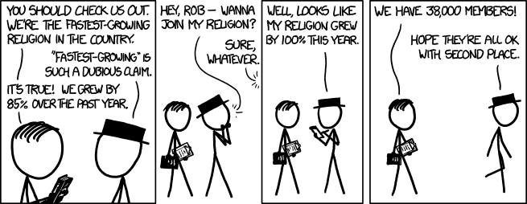
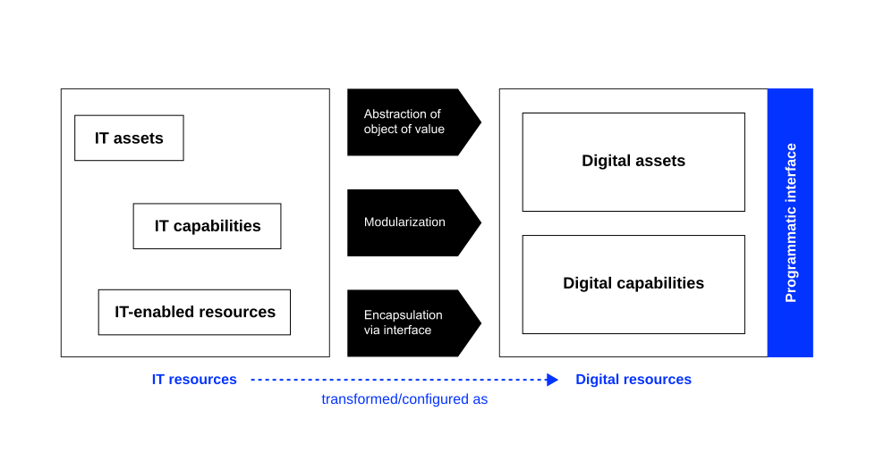
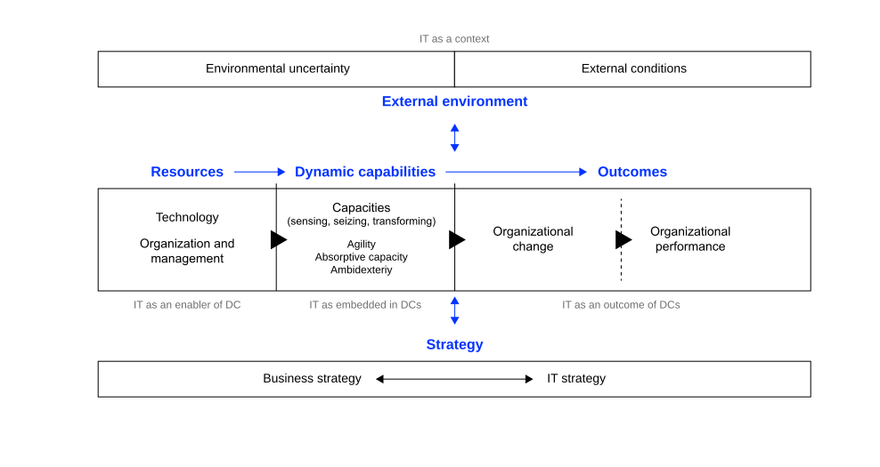
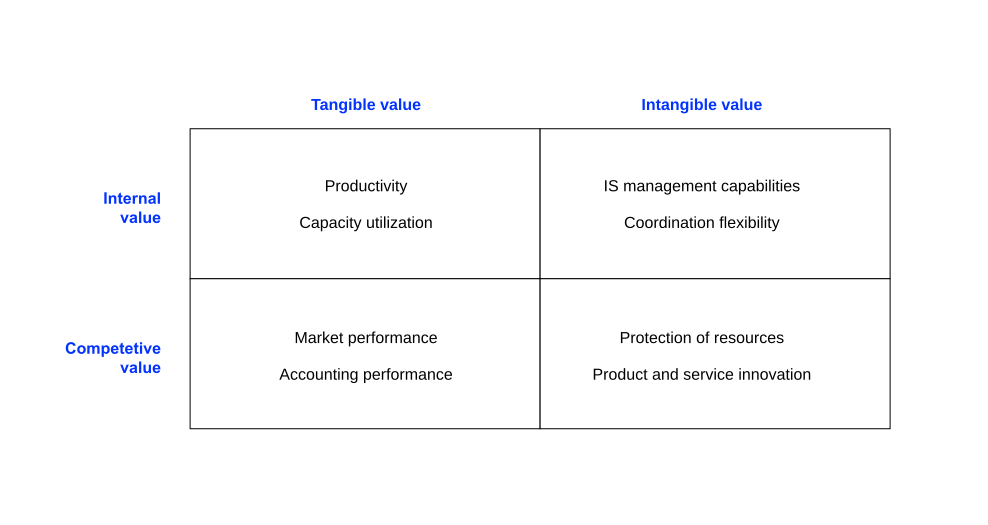
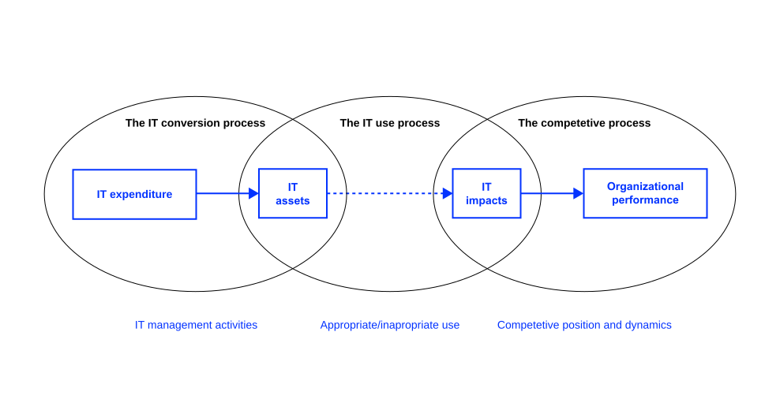
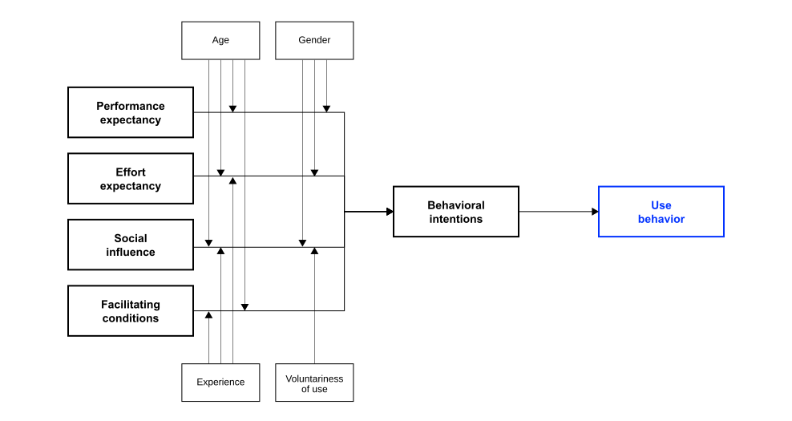
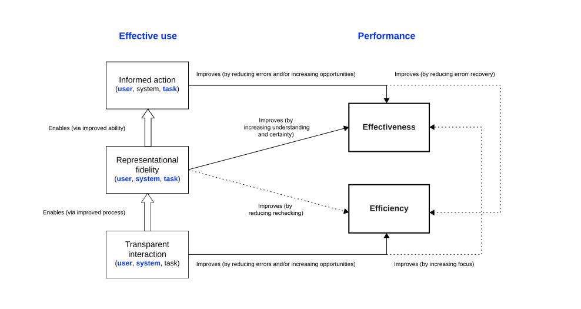

Introduction
Business Value Creation with IT (BVC)
Introduction
Necessity of definitions

To gain mutual understanding, core terms need to be defined. For this lecture, we need to—at least—figure out what IT and business value means.
IT and digital
IT x
IT resources are the foundational technological components that organizations leverage.
These include:
- IT assets are tangible or intangible technological components that can be bought or built (e.g., hardware, software, data repos) (Melville et al., 2004)
- IT capabilities refers to the ability to mobilize and deploy IT assets in combination with other resources (e.g., IT skills or IT management abilities) (Wade & Hulland, 2004)
- IT-enabled resources are organizational resources that are enhanced or created through the application of IT (e.g, IT-enhanced business processes) (Wade & Hulland, 2004)
To create IT-enabled resources organizations need to integrate IT assets, IT capabilities and complementary organizational resources in a way that they create synergies.
From IT to digital resources
Digital resources represent a conceptual evolution of IS resources that focuses on the strategic value created through digital technology. Digital resources are (1) are modular, (2) encapsulate objects of value, assets, and/or capabilities, (3) and are accessible by way of a programmatic interface (Piccoli et al., 2022).
- Modularity
- Digital resources are like LEGO blocks designed to snap together. They work independently but are specifically designed to be combined with other digital components to create larger, more complex systems. Example: A payment processing API is a self-contained module that can be plugged into various e-commerce platforms, mobile apps, or websites.
- Encapsulated value
- Digital resources have no inherent value on their own – they only become valuable when someone wants to use what’s inside them. Their value comes from the assets or capabilities they contain and the demand for those capabilities. Example: A machine learning algorithm for predicting customer churn has value only because companies need this prediction capability. Without this demand, the algorithm itself would have no inherent value.
- Programmatic interface
- Digital resources are accessed through code rather than physical means. They have a software “wrapper” with specific rules about how to interact with them. This wrapper controls access through predefined commands and responses. Example: Instead of physically handling a document, you access a cloud storage service through its API, using specific commands to upload, download, or modify files.

Digital resources encompass all digitally-enabled components that can create value for an organization. This includes:
- Digital assets are digital components that have value-creating properties and are governed by well-defined property rights. These are the foundational building blocks that enable digital initiatives.
- Digital capabilities refers to the ability to mobilize and deploy digital assets in combination with other resources. These represent an organization’s capacity to conceptualize and execute digital initiatives.
Dynamic capabilities
The resource-based view supports that firms may achieve a competitive advantage based on their bundles of resources and capabilities (Peteraf et al., 2013; Wade & Hulland, 2004).
The dynamic capabilities (DC) view argues that firms have to evolve their resource and capability base in order to ensure a sustained competitive advantage (Peteraf et al., 2013) — two types of resources:
- ordinary or operational capabilities, which allow firms to survive in the present by supporting existing operations
- dynamic capabilities, which are directed towards strategic change of ordinary capabilities and resources
DCs represent an organization’s ability to purposefully create, extend, or modify its resource base to address rapidly changing environments (Teece, 2014).
IS and dynamic capabilities
The multifaceted relationship between IT and dynamic capabilities highlights the complex role that information technology plays in organizational adaptation and renewal in the digital era. IT is not merely a tool but can simultaneously be an enabler, an embedded element, and an outcome of an organization’s dynamic capabilities.

IT as an enabler of DCs
When IT functions as an enabler, it provides the foundation or platform that makes dynamic capabilities possible or enhances their effectiveness. IT systems provide the infrastructure, tools, and information access that organizations need to develop and deploy their dynamic capabilities.
Examples:
- A business intelligence platform that aggregates market data, enabling executives to better sense market changes
- Cloud computing infrastructure that provides the scalability and flexibility needed for rapid resource reallocation
- Advanced data analytics tools that enhance an organization’s ability to identify emerging patterns and opportunities
- Enterprise collaboration tools that facilitate knowledge sharing across organizational boundaries, supporting sensing capabilities
IT embedded in DCs
When IT is embedded in dynamic capabilities, it becomes an integral component of the capability itself, inseparable from the processes and routines that constitute the capability. The capability itself incorporates digital technology as a core element, where the technology and organizational processes are fused together.
Examples:
- Digital product development platforms that integrate customer feedback, design tools, and production processes into a cohesive capability
- Algorithmic decision-making systems that are embedded in a firm’s resource allocation processes
- Digital twins that are integrated into manufacturing operations, enabling continuous monitoring and optimization
- CRM systems that are embedded in customer relationship management capabilities, combining data, processes, and customer interactions
IT as a result of DCs
When IT is a result of dynamic capabilities, new technological solutions emerge from an organization’s ability to sense opportunities, mobilize resources, and transform its operations. The application of dynamic capabilities leads to the creation of new IT assets, systems, or capabilities as organizations adapt to changing environments.
Examples:
- A new proprietary algorithm developed through a firm’s innovation capability responding to market changes
- Custom digital platforms that result from an organization reconfiguring its resources to address emerging opportunities
- Internal IT systems that evolve based on organizational learning and transformation capabilities
- Digital products or services that emerge from an organization’s sensing and seizing of market opportunities
Value
IS business value
Value created by IT is—in a business context—usually referred to as IT/IS business value.
IS business value is the impact of investments in particular IS assets on the multidimensional performance and capabilities of economic entities at various levels, complemented by the ultimate meaning of performance in the economic environment. Schryen (2013, p. 141)
The ultimate meaning of performance refers to what is subsequently derived if the outcome is exploited, e.g.
- impact on performance of a workflow management system: faster business processes
- the ultimate meaning: is dependent on the use of gained time and the extent to which competitors have speeded up their processes
Taxonomy of IS business value
Schryen (2013) presents a conceptual framework that organizes IS business value along two key dimensions, creating a four-field matrix. This matrix provides a comprehensive way to understand the multifaceted nature of value created by information systems.

The matrix is organized along two dimensions:
- Value form: tangible vs. intangible
- Value location: internal vs. external
This creates four distinct quadrants of IS business value.
Internal tangible value
Internal tangible value refers to measurable improvements in internal operations and financial metrics.
- Directly observable within the organization
- Quantifiable in financial or operational terms
- Often appears in performance reports
Examples:
- Cost reductions in business processes
- Improved employee productivity
- Reduced error rates
- Faster transaction processing times
- Decreased inventory holding costs
Internal intangible value
Internal intangible value refers to non-monetary improvements within the organization that enhance capabilities.
- Difficult to measure directly
- Creates organizational capabilities and knowledge assets
- Often serves as foundation for other types of value
Examples:
- Enhanced organizational learning
- Improved information accessibility
- Better decision-making quality
- Increased employee satisfaction
- Improved organizational flexibility
External tangible value
External tanbible vlaue refers to measurable improvements in market position and customer relationships.
- Quantifiable impacts on market performance
- Observable through market metrics
- Directly impacts competitive position
Examples:
- Increased market share
- Higher customer retention rates
- Improved sales conversion rates
- Reduced customer acquisition costs
- Premium pricing ability
External intangible value
Exernal intangible value refers to non-monetary improvements in external relationships and positioning
- Difficult to quantify but strategically significant
- Influences long-term competitive position
- Creates strategic options and opportunities
Examples:
- Enhanced brand reputation
- Improved customer trust
- Better industry partnerships
- Greater strategic flexibility
- Increased barriers to competition
Strategic implications
Schryen’s matrix is particularly valuable because it emphasizes:
Value complementarity: The four types of value often reinforce each other (e.g., internal intangible value like knowledge management capabilities can enable external tangible value like increased sales)
Measurement challenges: Organizations need different metrics and approaches to capture value in each quadrant
Temporal dynamics: Value often migrates between quadrants over time (e.g., internal process improvements eventually translating to external market benefits)
Strategic balance: Organizations should pursue a portfolio of IS investments that create value across all four quadrants
Usage as the missing link
Soh & Markus (1995) proposed a process model that explains how IT investments are transformed into business value. Their model is particularly significant because it identifies the critical processes and necessary conditions that must occur for IT to generate organizational benefits. The model consists of three linked processes, each with its own cause-effect relationship:
- The IT conversion process: from IT expenditure to IT assets
- The IT use process: from IT assets to IT impacts
- The competitive process: from IT impacts to organizational performance

The central and most critical insight of Soh and Markus’s model is their identification of IT use as the essential missing link in the IT value creation chain. Prior to their work, many researchers focused primarily on the relationship between IT investments and organizational performance, often finding inconsistent results (the “productivity paradox”).
Their model highlights that:
- The critical path requires actual usage of the technology (IT assets → IT use → IT impacts)
- Not just any use, but effective and appropriate use is required
- Usage is necessary but alone does not guarantee value
Adoption and use

The Unified Theory of Acceptance and Use of Technology (UTAUT) suggests that the actual use of technology is determined by behavioural intention. The perceived likelihood of adopting the technology is dependent on the direct effect of four key constructs, namely performance expectancy, effort expectancy, social influence, and facilitating conditions. The effect of predictors is moderated by age, gender, experience and voluntariness of use
Efective use

Key for Figure 7: Solid arrows reflect primary paths; dashed arrows reflect secondary paths; boxed arrows reflect necessary causality (i.e., x enables but does not determine y ). Bolding on “user,” “system” and “task” reflect the relative emphasis on each element of use (bold reflects more emphasis).
The Theory of Effective Use defines effective use as “using a system in a way that helps attain the goals of using the system” (Burton-Jones & Grange, 2013, p. 636) and conceptualizes it to consist of three dimensions: transparent interaction, representational fidelity, and informed action.
- Transparent interaction is the extent to which a user is accessing the system’s representations unimpeded by its surface and physical structures.
- Representational fidelity is the extent to which a user is obtaining representations from the system that faithfully reflect the domain being represented.
- Informed action is the extent to which a user acts upon the faithful representations he or she obtains from the system to improve his or her state.